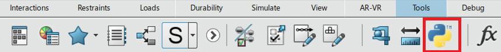
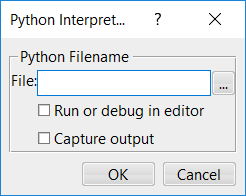
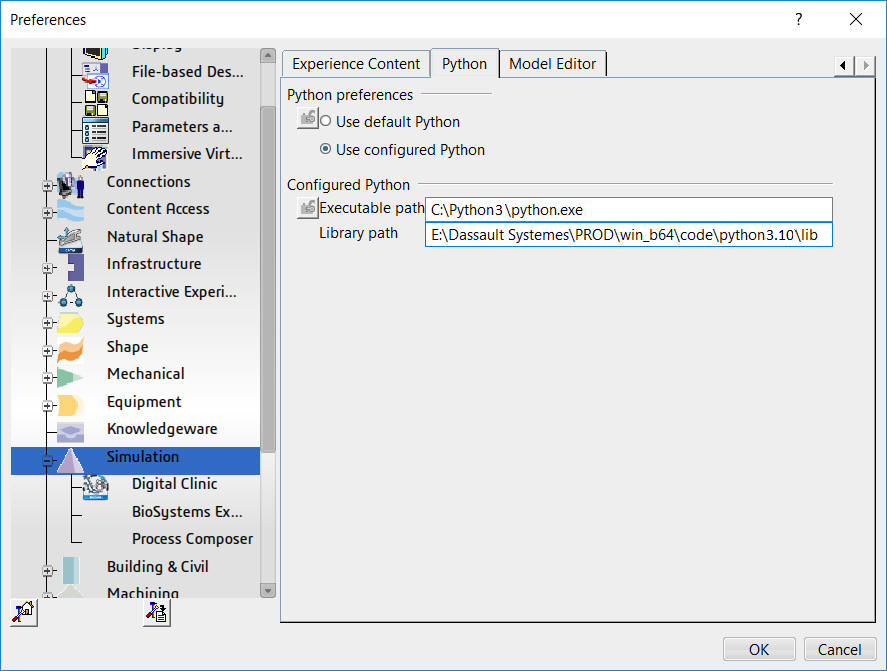
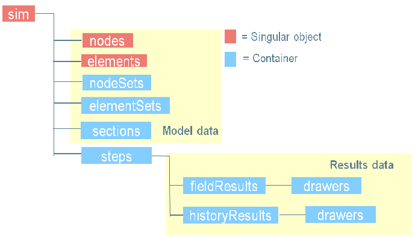

Simulation Interchange Model Overview |
| Technical Article |
AbstractThis technical article presents an overview of the Simulation Interchange Model. |
The Simulation Interchange Model (SIM) is the SIMULIA data storage or exchange mechanism used by 3DEXPERIENCE SIMULIA applications. It is a database designed to handle large volumes of data efficiently. It supports both model and results data.
The database access starts with accessing a file named .SMAManifest. This is an xml file that groups other files that make up the database; binary files with extensions .SMAFocus and .SMABulk.
A SIM document can be generated by either a 3DEXPERIENCE simulation run or by a standalone Abaqus execution with resultsFormat SIM option. This SIM document can be read, accessed or modified using the SIM results API.
A SIM document is capable of storing both model and results data. The results SIM document can be visualized in the Physics Results Explorer app. While results documents are usually generated by SIMULIA apps, they can also be generated, modified, read using SIM results API, available in both C++ and Python. This section discusses the SIM Python API.
The SIM Results API has two modules- simResultsReader and simResultsWriter that help reading and writing results.
A script generated using these modules can be run within the 3DEXPERIENCE platform using the Python button in the Tools section of any SIMULIA app as shown below

After clicking the Python button, you choose the Python file as shown below

By default, the Python interpreter is the 3DEXPERIENCE Python interpreter. You can also use Python downloaded from internet by following the steps below. Python 3 is supported in 2024x GA.

...
import sys
sys.path += ['E:\\Dassault Systemes\\PROD\\win_b64\\code\\python3.10\\lib']
#where 'E:\\Dassault Systemes\\PROD\\win_b64\\code\\python3.10\\lib' is the Python library path
...
Some of the main features in the SIM API are:

Some of the limitations in the SIM API are:
The following snippet helps you access an SMAManifest file from a scenario object.
... import com3dx import simResultsReader #Inside scenario app CATIA = com3dx.get3dxClient() myEditor = CATIA.ActiveEditor myProdService = myEditor.GetService("PLMProductService") mySimuObj = myProdService.EditedContent.Item(1) myProduct = mySimuObj.Model #Get FEM root mySimuService = CATIA.GetSessionService("SimSimulationService") myRootOccurrence = mySimuService.GetProductRootOccurrence(mySimuObj) myFemRoot = None myRef = myRootOccurrence.ReferenceRootOccurrenceOf for myRep in myRef.RepInstances: myRepRef = myRep.ReferenceInstanceOf if "FEM" == myRepRef.GetAttributeValue("V_discipline"): myFemRoot = myRepRef.GetItem("SimFemRoot") break print('-'*40) #Get SIM access for FEM mySimManagerSIMAccess = myFemRoot.GetItem("SimManagerSIMAccess") print ("root fem:", mySimManagerSIMAccess.ManifestPath) #Get first analysis case myScenarioManager = mySimuObj.GetItem("SimScenarioManager") myScenarioAccess = myScenarioManager.AnalysisCases.Item(1).GetItem("SimManagerSIMAccess") print ("analysis case:", myScenarioAccess.ManifestPath) #Get first result myResultManager = mySimuObj.Results.Item(1).Root.GetItem("SimResultsManager") myResultAccess = myResultManager.ResultsAnalysisCases.Item(1).GetItem("SimManagerSIMAccess") print ("result case:", myResultAccess.ManifestPath) #Use SIM Reader API to read the results reader = simResultsReader.SIMResultsReader() reader.LoadDocument(myResultAccess.ManifestPath) print ("element types:", reader.GetElementSpecs()) ...